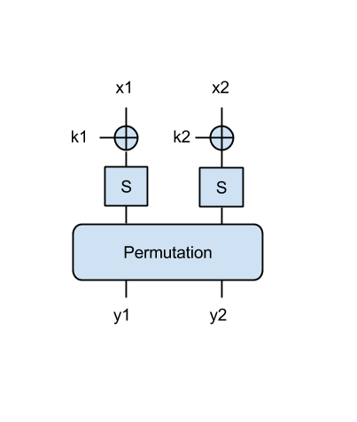
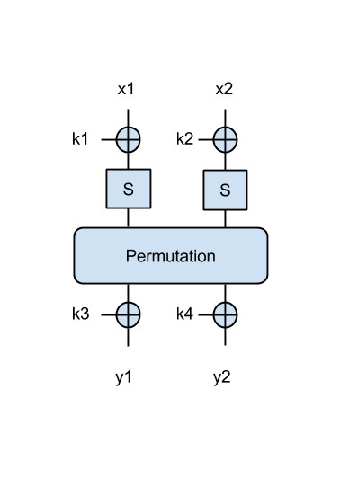
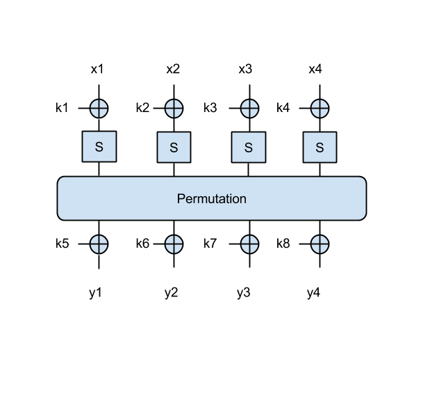

In this lab we shall do some exercises related to PRFs, PRPs and DES. Please check the course, available here: http://cs.curs.pub.ro/2014/pluginfile.php/13095/mod_resource/content/1/sasc_curs4.pdf
Let $F : K × X \to Y$ be a secure PRF with $K = X = Y = \{0, 1\}^{n}$.
Let's analyse some substitution-permutation networks (SPN).
We have the SPN from this figure: 
where S denotes the AES S-box (we'll discuss this in some detail during the next lecture), and 'Permutation' is a simple permutation block that simply shifts the input 4 bits to the right as in a queue. Both this S-box and the permutation are invertible and known by the attacker (you). Each input (x1, x2) is 8-bit (1 byte), as well as the keys k1, k2, and the outputs y1, y2.
import sys
import random
import string
import operator
# Rijndael S-box
sbox = [0x63, 0x7c, 0x77, 0x7b, 0xf2, 0x6b, 0x6f, 0xc5, 0x30, 0x01, 0x67,
0x2b, 0xfe, 0xd7, 0xab, 0x76, 0xca, 0x82, 0xc9, 0x7d, 0xfa, 0x59,
0x47, 0xf0, 0xad, 0xd4, 0xa2, 0xaf, 0x9c, 0xa4, 0x72, 0xc0, 0xb7,
0xfd, 0x93, 0x26, 0x36, 0x3f, 0xf7, 0xcc, 0x34, 0xa5, 0xe5, 0xf1,
0x71, 0xd8, 0x31, 0x15, 0x04, 0xc7, 0x23, 0xc3, 0x18, 0x96, 0x05,
0x9a, 0x07, 0x12, 0x80, 0xe2, 0xeb, 0x27, 0xb2, 0x75, 0x09, 0x83,
0x2c, 0x1a, 0x1b, 0x6e, 0x5a, 0xa0, 0x52, 0x3b, 0xd6, 0xb3, 0x29,
0xe3, 0x2f, 0x84, 0x53, 0xd1, 0x00, 0xed, 0x20, 0xfc, 0xb1, 0x5b,
0x6a, 0xcb, 0xbe, 0x39, 0x4a, 0x4c, 0x58, 0xcf, 0xd0, 0xef, 0xaa,
0xfb, 0x43, 0x4d, 0x33, 0x85, 0x45, 0xf9, 0x02, 0x7f, 0x50, 0x3c,
0x9f, 0xa8, 0x51, 0xa3, 0x40, 0x8f, 0x92, 0x9d, 0x38, 0xf5, 0xbc,
0xb6, 0xda, 0x21, 0x10, 0xff, 0xf3, 0xd2, 0xcd, 0x0c, 0x13, 0xec,
0x5f, 0x97, 0x44, 0x17, 0xc4, 0xa7, 0x7e, 0x3d, 0x64, 0x5d, 0x19,
0x73, 0x60, 0x81, 0x4f, 0xdc, 0x22, 0x2a, 0x90, 0x88, 0x46, 0xee,
0xb8, 0x14, 0xde, 0x5e, 0x0b, 0xdb, 0xe0, 0x32, 0x3a, 0x0a, 0x49,
0x06, 0x24, 0x5c, 0xc2, 0xd3, 0xac, 0x62, 0x91, 0x95, 0xe4, 0x79,
0xe7, 0xc8, 0x37, 0x6d, 0x8d, 0xd5, 0x4e, 0xa9, 0x6c, 0x56, 0xf4,
0xea, 0x65, 0x7a, 0xae, 0x08, 0xba, 0x78, 0x25, 0x2e, 0x1c, 0xa6,
0xb4, 0xc6, 0xe8, 0xdd, 0x74, 0x1f, 0x4b, 0xbd, 0x8b, 0x8a, 0x70,
0x3e, 0xb5, 0x66, 0x48, 0x03, 0xf6, 0x0e, 0x61, 0x35, 0x57, 0xb9,
0x86, 0xc1, 0x1d, 0x9e, 0xe1, 0xf8, 0x98, 0x11, 0x69, 0xd9, 0x8e,
0x94, 0x9b, 0x1e, 0x87, 0xe9, 0xce, 0x55, 0x28, 0xdf, 0x8c, 0xa1,
0x89, 0x0d, 0xbf, 0xe6, 0x42, 0x68, 0x41, 0x99, 0x2d, 0x0f, 0xb0,
0x54, 0xbb, 0x16]
# Rijndael Inverted S-box
rsbox = [0x52, 0x09, 0x6a, 0xd5, 0x30, 0x36, 0xa5, 0x38, 0xbf, 0x40, 0xa3,
0x9e, 0x81, 0xf3, 0xd7, 0xfb , 0x7c, 0xe3, 0x39, 0x82, 0x9b, 0x2f,
0xff, 0x87, 0x34, 0x8e, 0x43, 0x44, 0xc4, 0xde, 0xe9, 0xcb , 0x54,
0x7b, 0x94, 0x32, 0xa6, 0xc2, 0x23, 0x3d, 0xee, 0x4c, 0x95, 0x0b,
0x42, 0xfa, 0xc3, 0x4e , 0x08, 0x2e, 0xa1, 0x66, 0x28, 0xd9, 0x24,
0xb2, 0x76, 0x5b, 0xa2, 0x49, 0x6d, 0x8b, 0xd1, 0x25 , 0x72, 0xf8,
0xf6, 0x64, 0x86, 0x68, 0x98, 0x16, 0xd4, 0xa4, 0x5c, 0xcc, 0x5d,
0x65, 0xb6, 0x92 , 0x6c, 0x70, 0x48, 0x50, 0xfd, 0xed, 0xb9, 0xda,
0x5e, 0x15, 0x46, 0x57, 0xa7, 0x8d, 0x9d, 0x84 , 0x90, 0xd8, 0xab,
0x00, 0x8c, 0xbc, 0xd3, 0x0a, 0xf7, 0xe4, 0x58, 0x05, 0xb8, 0xb3,
0x45, 0x06 , 0xd0, 0x2c, 0x1e, 0x8f, 0xca, 0x3f, 0x0f, 0x02, 0xc1,
0xaf, 0xbd, 0x03, 0x01, 0x13, 0x8a, 0x6b , 0x3a, 0x91, 0x11, 0x41,
0x4f, 0x67, 0xdc, 0xea, 0x97, 0xf2, 0xcf, 0xce, 0xf0, 0xb4, 0xe6,
0x73 , 0x96, 0xac, 0x74, 0x22, 0xe7, 0xad, 0x35, 0x85, 0xe2, 0xf9,
0x37, 0xe8, 0x1c, 0x75, 0xdf, 0x6e , 0x47, 0xf1, 0x1a, 0x71, 0x1d,
0x29, 0xc5, 0x89, 0x6f, 0xb7, 0x62, 0x0e, 0xaa, 0x18, 0xbe, 0x1b ,
0xfc, 0x56, 0x3e, 0x4b, 0xc6, 0xd2, 0x79, 0x20, 0x9a, 0xdb, 0xc0,
0xfe, 0x78, 0xcd, 0x5a, 0xf4 , 0x1f, 0xdd, 0xa8, 0x33, 0x88, 0x07,
0xc7, 0x31, 0xb1, 0x12, 0x10, 0x59, 0x27, 0x80, 0xec, 0x5f , 0x60,
0x51, 0x7f, 0xa9, 0x19, 0xb5, 0x4a, 0x0d, 0x2d, 0xe5, 0x7a, 0x9f,
0x93, 0xc9, 0x9c, 0xef , 0xa0, 0xe0, 0x3b, 0x4d, 0xae, 0x2a, 0xf5,
0xb0, 0xc8, 0xeb, 0xbb, 0x3c, 0x83, 0x53, 0x99, 0x61 , 0x17, 0x2b,
0x04, 0x7e, 0xba, 0x77, 0xd6, 0x26, 0xe1, 0x69, 0x14, 0x63, 0x55,
0x21, 0x0c, 0x7d]
def strxor(a, b): # xor two strings (trims the longer input)
return "".join([chr(ord(x) ^ ord(y)) for (x, y) in zip(a, b)])
def hexxor(a, b): # xor two hex strings (trims the longer input)
ha = a.decode('hex')
hb = b.decode('hex')
return "".join([chr(ord(x) ^ ord(y)).encode('hex') for (x, y) in zip(ha, hb)])
def bitxor(a, b): # xor two bit strings (trims the longer input)
return "".join([str(int(x)^int(y)) for (x, y) in zip(a, b)])
def str2bin(ss):
"""
Transform a string (e.g. 'Hello') into a string of bits
"""
bs = ''
for c in ss:
bs = bs + bin(ord(c))[2:].zfill(8)
return bs
def hex2bin(hs):
"""
Transform a hex string (e.g. 'a2') into a string of bits (e.g.10100010)
"""
bs = ''
for c in hs:
bs = bs + bin(int(c,16))[2:].zfill(4)
return bs
def bin2hex(bs):
"""
Transform a bit string into a hex string
"""
return hex(int(bs,2))[2:]
def byte2bin(bval):
"""
Transform a byte (8-bit) value into a bitstring
"""
return bin(bval)[2:].zfill(8)
def permute4(s):
"""
Perform a permutatation by shifting all bits 4 positions right.
The input is assumed to be a 16-bit bitstring
"""
ps = ''
ps = ps + s[12:16]
ps = ps + s[0:12]
return ps
def permute_inv4(s):
"""
Perform the inverse of permute4
The input is assumed to be a 16-bit bitstring
"""
ps = ''
ps = ps + s[4:16]
ps = ps + s[0:4]
return ps
def spn_1r_reduced_2s(k, x):
"""
Performs an encryption with a substitution-permutation network.
Key k = {k1, k2}, total of 16 bits (2 x 8 bits)
Input x = {x1, x2}, total of 16 bits (2 x 8 bits)
Both k and x are assumed to be bitstrings.
Return:
a 16-bit bitstring containing the encryption y = {y1, y2}
"""
# Split input and key
x1 = x[0:8]
x2 = x[8:16]
k1 = k[0:8]
k2 = k[8:16]
#Apply S-box
u1 = bitxor(x1, k1)
v1 = sbox[int(u1,2)]
v1 = byte2bin(v1)
u2 = bitxor(x2, k2)
v2 = sbox[int(u2,2)]
v2 = byte2bin(v2)
#Apply permutation
pin = v1 + v2
pout = permute4(pin)
return pout
def spn_1r_full_2s(k, x):
"""
Performs an encryption with a substitution-permutation network.
Key k = {k1, k2, k3, k4}, total of 32 bits (4 x 8 bits)
Input x = {x1, x2}, total of 16 bits (2 x 8 bits)
Both k and x are assumed to be bitstrings.
Return:
a 16-bit bitstring containing the encryption y = {y1, y2}
"""
# Split input and key
x1 = x[0:8]
x2 = x[8:16]
k1 = k[0:8]
k2 = k[8:16]
k3 = k[16:24]
k4 = k[24:32]
#Apply S-box
u1 = bitxor(x1, k1)
v1 = sbox[int(u1,2)]
v1 = byte2bin(v1)
u2 = bitxor(x2, k2)
v2 = sbox[int(u2,2)]
v2 = byte2bin(v2)
#Apply permutation
pin = v1 + v2
pout = permute4(pin)
#Apply final XOR
po1 = pout[0:8]
po2 = pout[8:16]
y1 = bitxor(po1, k3)
y2 = bitxor(po2, k4)
return y1+y2
def main():
#Run reduced 2-byte SPN
msg = 'Hi'
key = '??' # Find this
xs = str2bin(msg)
ks = str2bin(key)
ys = spn_1r_reduced_2s(ks, xs)
print 'Two y halves of reduced SPN: ' + ys[0:8] + ' (hex: ' + bin2hex(ys[0:8]) + '), ' + ys[8:16] + ' (hex: ' + bin2hex(ys[8:16]) + ')'
#Run full 2-byte SPN
msg = 'Om'
key = '????' # Find this
xs = str2bin(msg)
ks = str2bin(key)
ys = spn_1r_full_2s(ks, xs)
print 'Two y halves of full SPN (2 bytes): ' + ys[0:8] + ' (hex: ' + bin2hex(ys[0:8]) + '), ' + ys[8:16] + ' (hex: ' + bin2hex(ys[8:16]) + ')'
if __name__ == "__main__":
main()
Now we have a better SPN, where the output of the permutation is XOR-ed with another 2 key bytes, as in the following figure: 
As another example, which uses a larger block size, let's use an SPN that takes a 4-byte input x=[x1 || x2 || x3 || x4] and an 8-byte key k=[k1 || k2 || k3 || k4 || k5 || k6 || k7 || k8] as in this figure: 
Note that in this 4-byte SPN, the permutation operates on all 4 bytes, similarly to the 2-byte SPN: that is, it shifts all bits four bits to the right.
{kind=link}
{kind=link}
{kind=link}